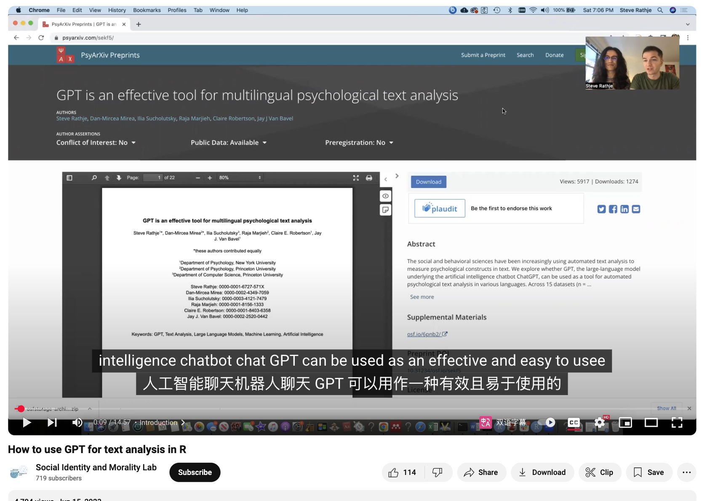
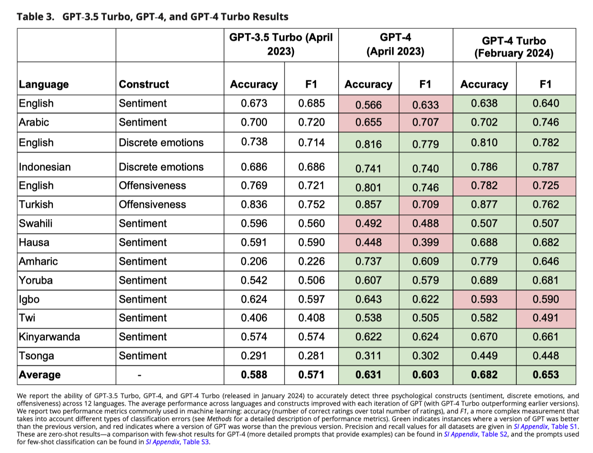
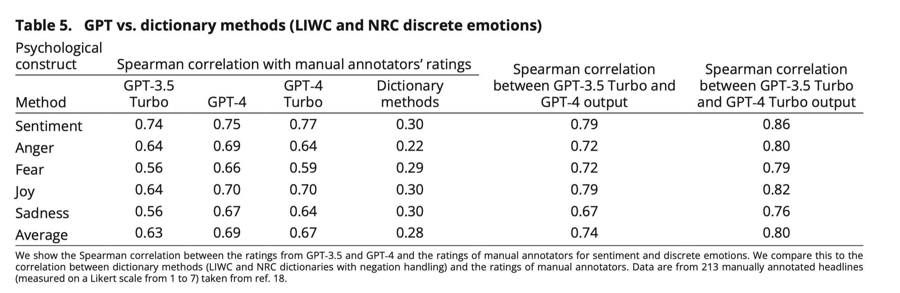

许多领域（包括心理学、社会学、通信、政治学和计算机科学）都使用量化文本分析来构建研究中的概念指标。但现有的文本分析方法存在许多缺点。
- 字典方法易于使用，但与最近的方法相比通常不是很准确。
- 机器学习模型虽然更准确，但可能难以训练和使用。
该研究证明，大型语言模型 GPT 能够使用简单的提示准确检测 12 种语言文本中的各种心理结构(情感、情绪、冒犯性和道德基础)，无需额外的训练数据。因此，GPT 克服了现有方法中存在的局限性。
一、资料
1.1 文献
S. Rathje, D. Mirea, I. Sucholutsky, R. Marjieh, C.E. Robertson, & J.J. Van Bavel, GPT is an effective tool for multilingual psychological text analysis, Proc. Natl. Acad. Sci. U.S.A. 121 (34) e2308950121, https://doi.org/10.1073/pnas.2308950121 (2024).
1.2 代码
该研究的作者使用的R语言进行的数据分析， 实验数据&代码 https://osf.io/6pnb2/
演示视频

二、内容速览
2.1 研究背景
- 研究问题：这篇文章探讨了大型语言模型（LLM）GPT是否可以作为自动化心理文本分析的工具，用于在多种语言中检测心理构念（如情感、离散情绪、冒犯性和道德基础）。
- 研究难点：现有的文本分析方法存在准确性和适用性不足的问题。词典方法虽然易于使用，但在检测心理构念时准确性较低。机器学习方法虽然更准确，但需要大量的标注数据和高级编程技能。此外，现有方法在多语言数据分析方面也存在局限性。
- 相关工作：计算社会科学领域已经使用自动化文本分析来研究社会趋势、社交媒体病毒式传播、心理健康状况与意识形态、个性等。然而，大多数现有方法依赖于西方人群和英语数据集，缺乏对少数语言和文化的研究。
2.2 研究方法
这篇论文提出了使用GPT进行自动化心理文本分析的方法。具体来说，
- GPT模型：GPT是基于Transformer架构的大型语言模型，训练数据来自互联网文本（如Common Crawl或Wikipedia），能够在无需额外训练的情况下完成跨语言的文本分析任务（即“零样本学习”）。
- 提示使用：GPT通过“提示”的方式工作，即根据用户提出的问题生成输出。例如，对于情感分析任务，提示可以是 ”请根据以下文本的情感打分：1表示非常负面，7表示非常正面”。
- 性能评估：使用准确率和平均F1值来衡量GPT的性能。准确率计算正确评分的数量占总评分数量的比例，而平均F1值则考虑了GPT在不同类型错误（如假阳性和假阴性）上的表现。
2.3 实验设计
- 数据集：使用了15个数据集，共包含47,925条手动标注的推文和新闻标题，涵盖12种语言。数据集涵盖了四种心理构念：情感、离散情绪、冒犯性和道德基础。
- 实验设置：使用GPT API进行多次提示，提示格式简洁明了。例如，情感分析的提示为：“请根据以下文本的情感打分：1表示非常负面，7表示非常正面。这里是我们的文本：[文本内容]”。
- 对比方法：将GPT的性能与其他常见的文本分析方法（如词典方法）以及顶级调优的机器学习模型进行对比。
2.4 结果与分析


- 情感分析：在英语和阿拉伯语数据集上，GPT-3.5 Turbo的准确率为0.673和0.700，F1值分别为0.685和0.720。GPT-4和GPT-4 Turbo在情感分析任务上也表现出色，且随着模型版本的更新，性能有所提升。
- 离散情绪检测：在英语和印度尼西亚语数据集上，GPT-3.5 Turbo的F1值分别为0.714和0.686，GPT-4 Turbo的F1值分别为0.782和0.785。GPT-4 Turbo在所有测试的语言中都表现出色，接近或超过了顶级调优的机器学习模型。
- 冒犯性检测：在英语和土耳其语数据集上，GPT-3.5 Turbo的F1值分别为0.721和0.752，GPT-4 Turbo的F1值分别为0.762和0.762。GPT-4 Turbo在所有测试的语言中都表现出色，显著优于现有的词典方法。
- 道德基础检测：在Reddit评论数据集上，GPT-4的F1值为0.653，GPT-4 Turbo的F1值为0.677。尽管在某些复杂心理构念（如比例性）上表现较差，但总体上仍接近顶级调优的BERT模型。
2.5 总体结论
这篇论文展示了GPT作为自动化心理文本分析工具的潜力，具有高精度和广泛的应用范围。GPT在多种语言和不同类型的文本数据上表现出色，且无需额外的训练数据。尽管在某些复杂心理构念上表现不如最新的调优模型，但其灵活性和易用性使其成为现有自动化文本分析方法的有效替代方案。未来研究应继续探索GPT和其他LLM在不同语言和文化背景下的表现，以验证其普适性。
三、论文评价
3.1 优点与创新
- 多语言支持：GPT在多种语言（包括12种语言）中表现出色，特别是在较少使用的语言中，如斯瓦希里语、豪萨语、阿姆哈拉语等。
- 无需训练数据：GPT能够在零样本学习的情况下进行文本分析，不需要额外的训练数据。
- 简单易用：GPT使用简单的提示（如“这篇文章是消极的吗？”）即可进行分析，且不需要大量的编码经验。
- 高准确性：GPT在检测情感、离散情绪、冒犯性和道德基础等心理构念方面，表现优于现有的英语词典分析方法，并且在某些情况下接近或超过了顶级调优的机器学习模型。
- 跨语言一致性：不同版本的GPT在输出上具有高度一致性，表明其结果具有较高的可重复性。
- 广泛的适用性：GPT适用于各种文本类型（如推文、新闻标题和Reddit评论），并且能够处理不同类型的评分（如Likert量表）。
- 测试-重测可靠性：GPT在多次运行中具有极高的可靠性，Cohen’s Kappa值在0.93到0.99之间。
3.2 不足&应对
| 问题 | 反思 | 应对 |
|---|---|---|
| 版本差异 | chatGPT模型每时每刻都在训练&更新，不同时刻的GPT可以看做是不同版本； | 使用开源LLM， 可明确指定使用的版本，方便其他学者复现。 |
| 心里构念 | 只能处理较为简单的心理构念， 太复杂的心里构念因为难以描述和界定，无法设计提示。 | 未来可微调LLM |
| 成本问题 | GPT API的使用成本较高，尤其是GPT-4 | 使用开源LLM，如Qwen、llama、deepseek； |
| 隐私问题 | 使用GPT API可能会导致研究中的隐私数据泄露 | 本地(离线)部署LLM， 所有数据都不会泄露 |
| 模型选择 | 本研究仅使用了GPT，未测试其他模型 | 使用其他LLM，如Qwen、llama、deepseek等 |
| 文化偏见 | GPT可能会反映人类偏见，如内群体偏好和对WEIRD人群任务的认知偏差，这可能会影响其结果的普遍性。 | 对大多数研究来说不是问题， 比如每个研究者都是有偏见的。把GPT这类LLM看做一个有偏见的人看待即可。 |
“WEIRD” 是一个缩写词，代表 “Western, Educated, Industrialized, Rich, and Democratic”（西方的、受过教育的、工业化的、富裕的和民主的）
相关内容
- 教程 | 使用大模型将文本数据转化为结构化数据
- 教程 | 如何使用 Ollama 下载 & 使用本地大语言模型
- 实验 | 如何使 Ollama 结构化输出 JSON 样式的结果
- 推荐 | 文本分析库cntext2.x使用手册
- 实验 | 使用本地大模型从文本中提取结构化信息